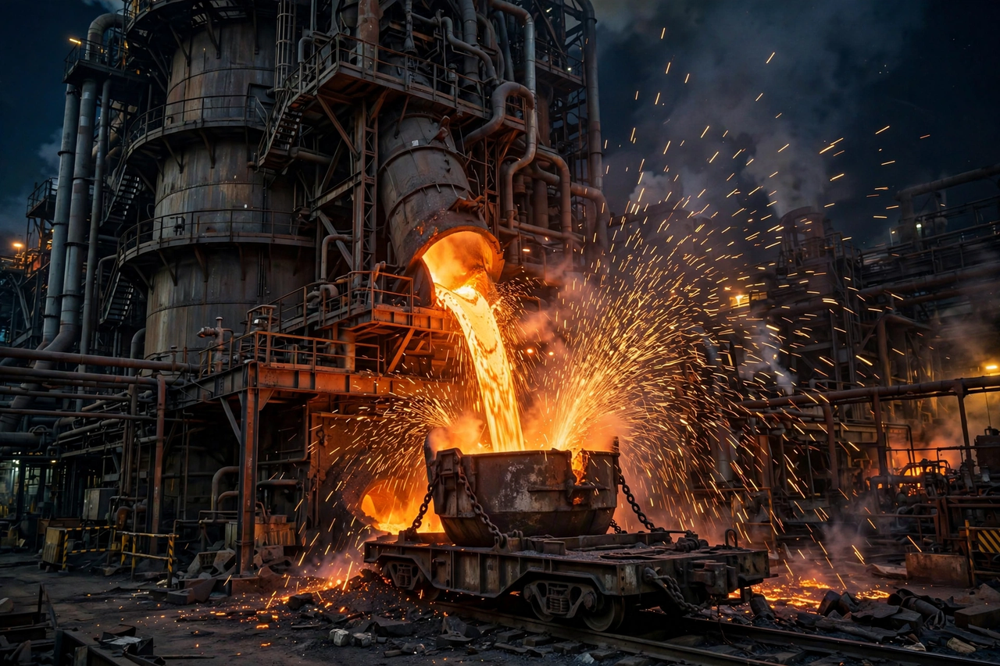

Blast furnace
A blast furnace is a type of metallurgical furnace used for smelting to produce industrial metals, generally pig iron, but also others such as lead or copper. Blast refers to the combustion air being supplied above atmospheric pressure. In a blast furnace, fuel (usually coke), ores and flux (limestone) are continuously supplied through the top of the furnace while a hot blast of air is blown into the lower part through a series of pipes called tuyeres, so that the chemical reactions take place throughout the furnace as the material falls downward. The end products are molten metal and slag phases tapped from the bottom, and waste gases (flue gas) exiting from the top.
 | |
| Process type | Smelting / reduction |
|---|---|
| Main product | Pig iron (hot metal) |
| Feedstocks | Iron ore, coke, limestone |
| Peak temperature | ~2,000–2,300 °C at the tuyeres |
| Output scale | Up to ~10,000+ tonnes/day in the largest furnaces |
Chemistry
The furnace works as a counter-current reactor. Rising hot gases from the combustion of coke in front of the tuyeres (C + O₂ → CO₂, then CO₂ + C → 2CO) reduce the descending iron oxides in stages: hematite (Fe₂O₃) → magnetite (Fe₃O₄) → wüstite (FeO) → metallic iron, mostly by carbon monoxide. Limestone decomposes to CaO, which combines with silica and other impurities to form a molten slag that floats on the iron and is tapped separately. The molten iron, saturated with about 4% carbon, is pig iron — the feedstock for steelmaking in the basic oxygen furnace.
Structure
The refractory-lined shaft is divided into the stack (upper cone), the belly (widest cylinder), the bosh (lower, inward-sloping part) and the hearth at the bottom, where molten iron and slag collect between tappings ("casts"). Hot stoves — Cowper stoves — preheat the blast to 1,100–1,300 °C using the furnace's own top gas. A modern furnace campaign lasts 15–20 years before relining.
History
Blast furnaces existed in China by the Han dynasty (cast iron production from around the 1st century BC/AD), while in Europe the technology emerged in the Middle Ages — early examples at Lapphyttan in Sweden (c. 1150–1350) — and spread in the 15th–16th centuries. Coke smelting, pioneered by Abraham Darby at Coalbrookdale in 1709, freed ironmaking from charcoal; James Beaumont Neilson's hot blast (1828) greatly improved efficiency. The blast furnace–basic oxygen route still produces roughly 70% of world steel, though hydrogen-based direct reduction is being developed to cut its large CO₂ emissions.
See also
Categories: Industrial furnaces · Steelmaking · Metallurgy